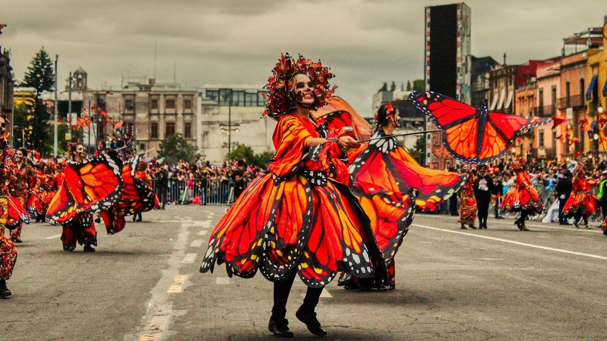

Race, Día de Muertos Parade

Behind
Best +0:01
371W
Target 418 W-47 W
- Cadence
- 87rpm
- Heart
- 140bpm
- Speed
- 26.5km/h
Work6 of 15
0:48
Next: · 2:00 at level 11
+0.2%
4 m climbed
2.68 km
21
Resistance / 32
Solo races your best-time ghost: position reads Ahead or Behind, and solo alone gets a Pause button. Frozen at 6:42.